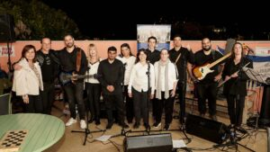
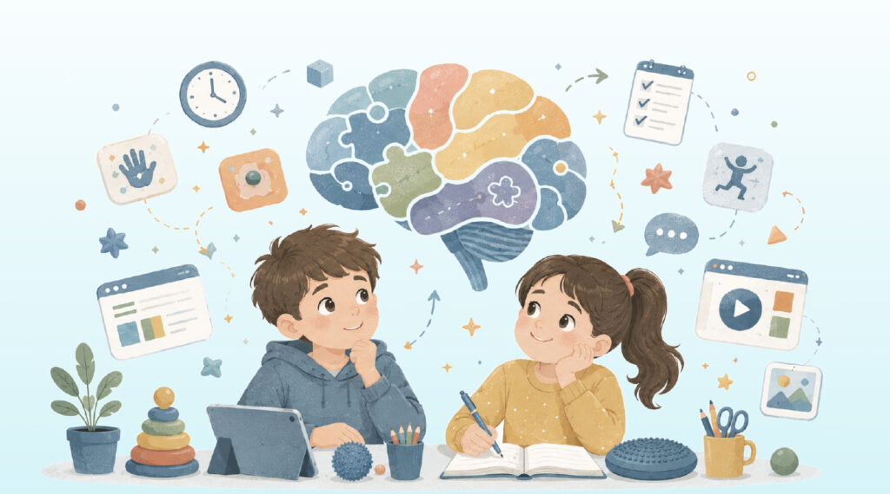
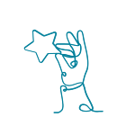
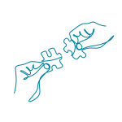
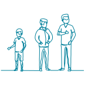
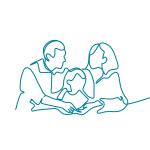
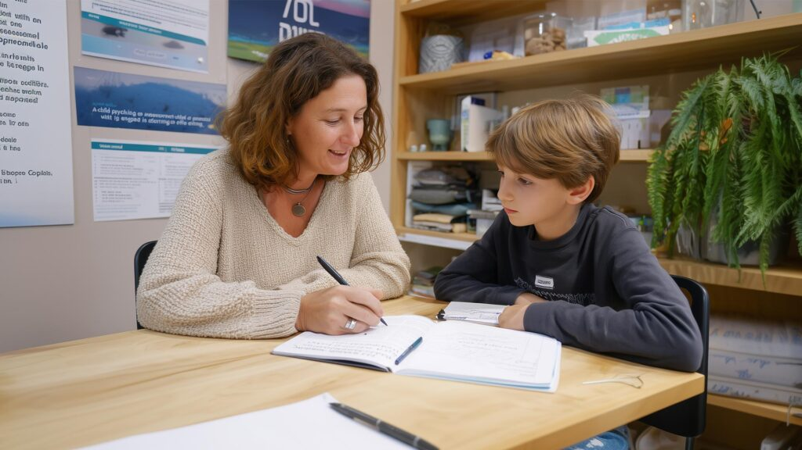
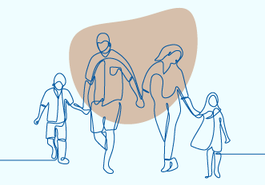

אבחון, טיפול וליווי לילדים ולבוגרים עם לקויות למידה והפרעות קשב — מהגן ועד העבודה הראשונה. יותר מ־60 שנות ניסיון, פרוסים בכל הארץ.
לקות למידה לא נעלמת בסוף שנת הלימודים. לכן ניצן בנויה כדרך שלמה, לא כטיפול נקודתי.
אבחון מוכנות לכיתה א׳ וזיהוי סימנים ראשונים — ככל שמקדימים, ההצלחה גדולה יותר.
אבחונים דידקטיים ופסיכו־דידקטיים, הוראה מתקנת ואסטרטגיות למידה מותאמות אישית.
ליווי לבגרויות, מיצוי זכויות והתאמות, והכנה לשירות ולהשכלה גבוהה.
כל השירותים ניתנים על ידי אנשי מקצוע מוסמכים, בסניפי ניצן ברחבי הארץ ובאונליין.
להבין בדיוק מה קורה — ומה עושים עכשיו.
כלים שעובדים, בקצב של הילד.
כי גם אתם צריכים מישהו לצידכם.

מסגרות דיור, תעסוקה נתמכת ומועדונים חברתיים לבוגרים עם לקויות למידה — חיים עצמאיים, קהילה תומכת ופנאי איכותי.
לשיקום ודיור
קורסים, השתלמויות ותוכניות לבתי ספר — הידע של 60 שנות טיפול, זמין למורים, למאבחנים ולמטפלים בכל הארץ.
לקטלוג ההכשרות
יותר מ־60 שנות ידע מצטבר ואלפי אנשי מקצוע מוסמכים.

אבחון, טיפול, למידה והורים — הכל תחת קורת גג אחת.

מהגן, דרך הצבא והאקדמיה, ועד תעסוקה ודיור לבוגרים.

אימון, קבוצות וייעוץ חינם — כי ההורים הם חצי מהדרך.

מפגשים פרטניים שסוגרים פערים בקריאה, בכתיבה ובחשבון — בקצב של הילד.
לפרטים
כלים מעשיים להורות רגועה יותר — בלי מלחמות על שיעורי בית.
לפרטיםתוכנית ארצית שהופכת בתי ספר לסביבה ידידותית לתלמידים עם לקויות למידה.
לפרטיםפעם חשבתי שאני טיפש. היום אני יודע שאני פשוט לומד אחרת — ומצליח.
יובל, כיתה ו׳המורה מניצן לימדה אותי טריקים לזכור דברים. פתאום מבחנים זה לא סוף העולם.
נועה, כיתה ח׳בזכות הקבוצה בניצן מצאתי חברים שמבינים אותי בדיוק.
איתי, כיתה ה׳קבעו פגישת ייעוץ ראשונה בזום — בחינם וללא התחייבות. נקשיב, נכוון, ונבנה יחד את הצעד הבא. ואם אתם רוצים לעזור לילד אחר לפרוח — כל תרומה מצמיחה עוד ניצן.